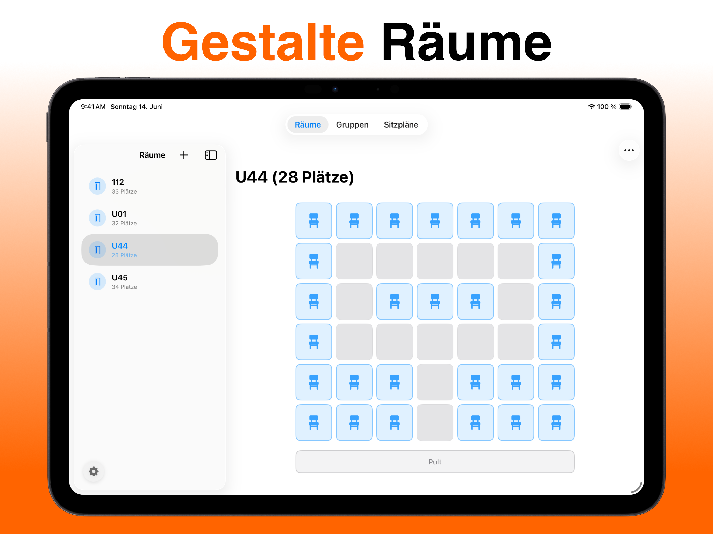
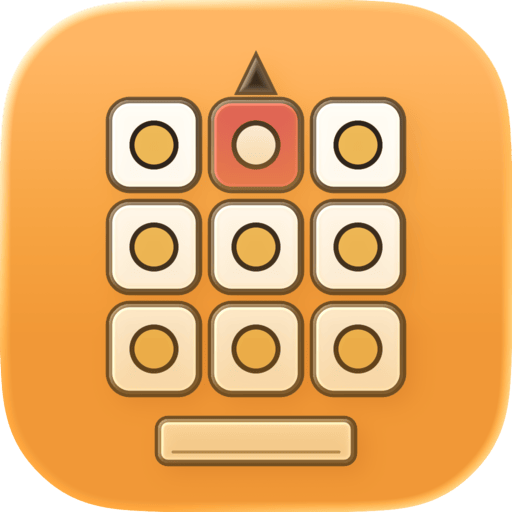

Sitzplan für die Grundschule: Ideen statt Vorlagen
In der Grundschule entscheidet der Sitzplan über mehr als Ruhe: Sichtbarkeit zur Tafel, Nähe zur Lehrkraft, soziales Lernen. Und kaum irgendwo ändern sich die Anforderungen so schnell wie in Klasse 1 bis 4. Worauf es ankommt — und warum eine flexible App praktischer ist als jede Word-Vorlage.
Was in der Grundschule besonders zählt
- Sichtlinien: Gerade Erstklässler brauchen freie Sicht zur Tafel — Körpergröße und Sehvermögen mitdenken.
- Nähe zur Lehrkraft: Kinder mit Förderbedarf oder Konzentrationsproblemen profitieren enorm von einem Platz in Pultnähe.
- Soziale Durchmischung: Regelmäßige Wechsel verhindern feste Cliquen und fördern neue Freundschaften.
- Konflikte entschärfen: Manche Kombinationen funktionieren einfach nicht — der Plan sollte sie zuverlässig trennen.
Bewährte Anordnungen für Klasse 1–4
Reihen mit Partnertischen geben Halt und Orientierung — ideal für den Anfangsunterricht. Gruppentische passen zu Stationsarbeit und Wochenplan, brauchen aber klare Regeln. Viele Grundschullehrkräfte kombinieren: Grundordnung in Reihen oder U-Form, umgebaut wird nur für Projektphasen.
Warum keine Vorlage?
Word- und PDF-Vorlagen zum Sitzplan gibt es viele — aber sie passen nie genau: anderer Raumschnitt, andere Tischzahl, andere Klassengröße. Und bei jedem Wechsel beginnst du von vorn. Praktischer ist ein digitaler Raum, den du einmal exakt nachbaust und dann immer wieder neu belegst.
So geht's mit Platzwahl
- Raum nachbauen Partnertische, Sitzkreis-Lücke, Gruppenecke — male dein Klassenzimmer als Raster nach.
- Klasse anlegen Namen eintragen oder als CSV importieren.
- Besonderheiten markieren Wer braucht einen Platz vorne? Wer sollte getrennt sitzen? Wer wünscht sich wen als Nachbarn?
- Berechnen & ausdrucken Die App findet den besten Plan, du druckst ihn als PDF — auch als Aushang fürs Pult.
Datenschutz-Bonus für die Grundschule: Alle Namen bleiben lokal auf deinem iPad — nichts landet in einer Cloud.


Platzwahl kostenlos laden
Gratis laden · iPhone & iPad · iOS 17+ · Keine Anmeldung
Häufige Fragen
Wie erstelle ich einen Sitzplan für die 1. Klasse?
Setze auf klare Strukturen: Reihen oder Partnertische mit freier Sicht zur Tafel, Kinder mit Förderbedarf nach vorne, unruhige Kinder getrennt. Mit Platzwahl markierst du diese Anforderungen als Regeln und lässt den Plan automatisch berechnen.
Gibt es eine kostenlose Sitzplan-Vorlage für die Grundschule?
Statt einer starren Vorlage kannst du mit der kostenlosen App Platzwahl deinen echten Klassenraum als Raster nachbauen und beliebig oft neu belegen — inklusive PDF-Export zum Ausdrucken.
Wie oft sollte der Sitzplan in der Grundschule wechseln?
Üblich sind Wechsel nach den Ferien oder zum Halbjahr. Häufigere Wechsel fördern die Durchmischung — mit automatischer Berechnung kostet ein neuer Plan nur noch einen Fingertipp.